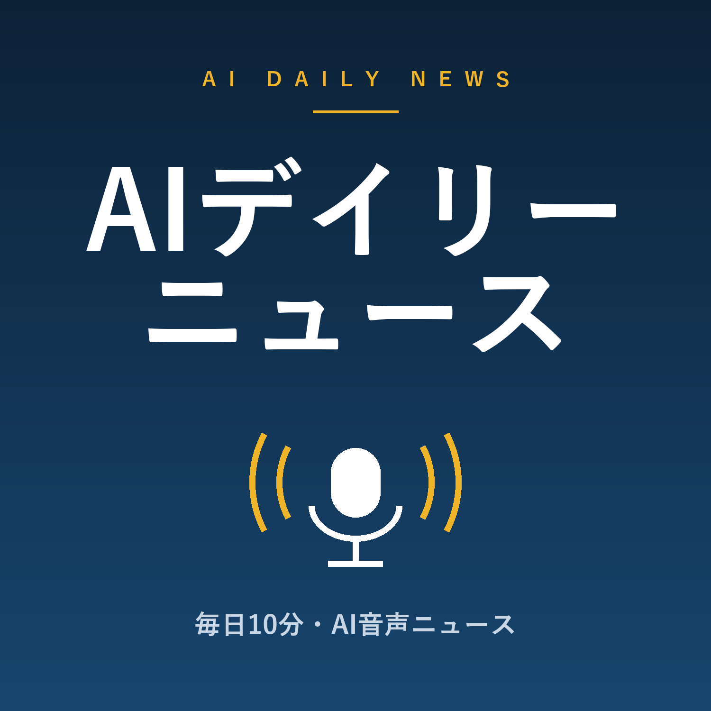

AIラジオ
AIが毎朝自動生成するポッドキャスト。下のフィードURLをポッドキャストアプリに登録すると毎朝自動で届きます。

AIデイリーニュース(毎朝5時ごろ)
https://teruhikonomizu-ops.github.io/ai-radio/news/feed.xml
📲 AntennaPodで登録
世界のAIニュース(毎朝4時ごろ)
https://teruhikonomizu-ops.github.io/ai-radio/tech/feed.xml
📲 AntennaPodで登録
※各社の公式RSS配信(NHK・Yahoo!・OpenAI・Google・TechCrunch等)をもとにAIが要約・構成しています。AI要約のため誤りを含む可能性があります。